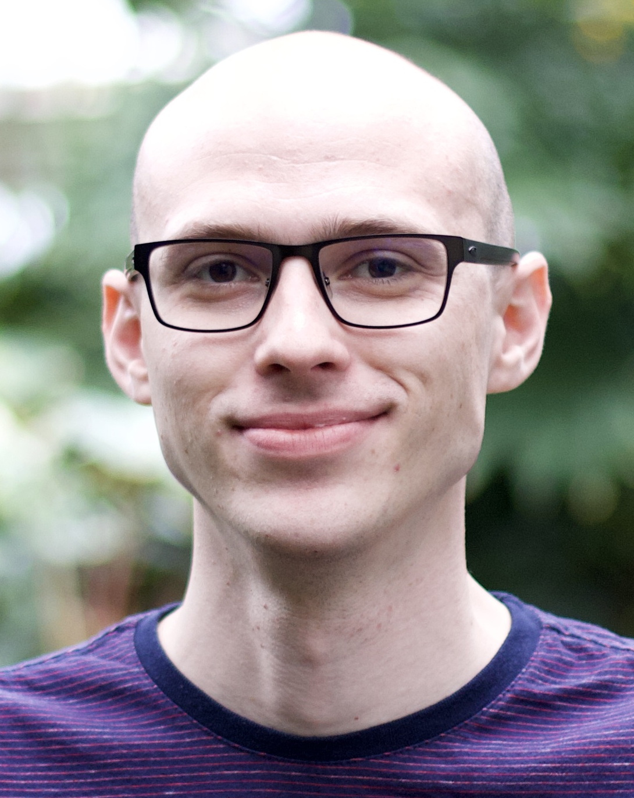
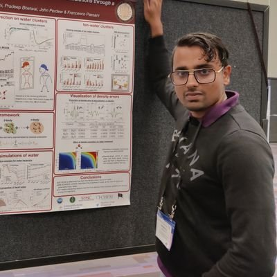

8:45 AM to 3:00 PM (Eastern US)
Participating groups
- Oliviero Andreussi (Boise State University)
- Marco Caricato (University of Kansas)
- Andrés Cisneros (UT Dallas)
- William Glover (NYU, Shanghai)
- John Herbert (Ohio State University)
- Francesco Paesani (UC San Diego)
- Michele Pavanello (Rutgers University-Newark)
- Alexander Sokolov (Ohio State University)
- Lyudmila Slipchenko (Purdue University)
Organizing committee
- Jessica Martinez
- Andres Cifuentes
- Michele Pavanello
- John Herbert
Program
Opening
| 9:00 | Opening Remarks |
Morning session
| Time | Speaker | Group | Title |
|---|---|---|---|
| 9:00 | Alexander Humeniuk | Glover, NYU Shanghai | Multistate, polarizable QM/MM embedding scheme based on the direct reaction field method: implementation details and challenges |
| 9:30 | Amiel Paz | Glover, NYU Shanghai | Pushing the boundaries: QM/MM simulations of excited state dynamics in the condensed phase |
| 10:00 | Andres Urbina | Slipchenko, Purdue | Exploring GPCR–Ligand Interactions Using the Effective Fragment Potential Method |
| 10:30 | Dustin Broderick | Herbert, OSU | A Framework for Managing Complexity in Fragmentation |
Discussion session 1
| Time | Activity | Moderator |
|---|---|---|
| 11:00 | Breakout rooms for discussion & lunch | Oliviero Andreussi, Alexander Sokolov |
Afternoon session
| Time | Speaker | Group | Title |
|---|---|---|---|
| 12:30 | Xuecheng Shao | Pavanello, Rutgers | A Density-Functionalization of QM/MM |
| 1:00 | Jorge Nochebuena | Cisneros, UT Dallas | QM/MM Simulations with the Gaussian Electrostatic Model |
| 1:30 | Saswata Dasgupta | Paesani, UCSD | Data-Driven Many-Body Potentials from Density Functional Theory and a Many-Body Approach to QM/MM Simulations |
Discussion session 2
| Time | Activity | Moderator |
|---|---|---|
| 2:00 | Breakout rooms for discussion & coffee | Marco Caricato, Andres Cisneros |
Closing
| 2:45 | Closing remarks |
Speakers

Dustin Broderick

Saswata Dasgupta
Saswata Dasgupta obtained his PhD from Ohio State University. His field of expertise includes DFT method development and many-body QM/MM methods.

Alexander Humeniuk
Alexander Humeniuk obtained his PhD at the University of Würzburg / Freie Universität Berlin. He develops electronic structure methods for ground and excited states. His field of expertise includes non-adiabatic and semiclassical molecular dynamics, simulation of ultrafast time-resolved spectroscopy experiments, and prediction of photophysical properties of small molecules.

Jorge Nochebuena
Jorge Nochebuena obtained his PhD from the Universidad Autónoma Metropolitana-Iztapalapa, Mexico. He is currently developing QM/MM methods that use polarizable force fields.

Amiel Paz
Amiel Paz is a graduate student of New York University in Shanghai. His expertise is in electronic structure methods for scalable and stable non-adiabatic ab initio excited-state molecular dynamics for photochemistry in the condensed phase.

Xuecheng Shao
Xuecheng Shao obtained his PhD from Jilin University in China. He is an active developer of multi-scale modeling software in Python such as DFTpy, eDFTpy, and QEpy. His field of expertise includes orbital-free DFT, density embedding / subsystem DFT and now also QM/MM.
Andres Urbina
Andres Urbina obtained his PhD from Purdue University. He is working on protein-ligand interactions — specifically, exploring GPCR-ligand interactions using the effective fragment potential (EFP) method.